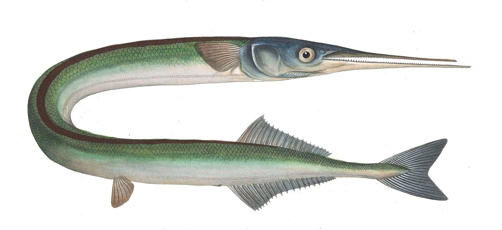

Biologia i rozpoznawanie
Wygląd i rozpoznawanie
Belona jest łatwo rozpoznawalna po wyjątkowo wydłużonym ciele i charakterystycznym „dziobie". Ciało ma niezwykle wydłużone, wężowate i bocznie ścieśnione, o grzbiecie mieniącym się zielenią i błękitem, przechodzącym w lśniące, srebrzyste boki i brzuch. Znakiem firmowym gatunku jest długi, cienki „dziób" utworzony przez wydłużone szczęki, gęsto uzbrojone w drobne, ostre zęby — to precyzyjne narzędzie do chwytania drobnych rybek. Płetwy grzbietowa i odbytowa przesunięte są daleko ku tyłowi ciała, tuż przed silnie wciętą płetwą ogonową, co nadaje belonie profil torpedy. Dorosłe osobniki osiągają zwykle 50–75 cm długości przy niewielkiej masie, bo ryba jest bardzo smukła. Zaskoczeniem dla wielu wędkarzy bywają zielone ości — cecha całkowicie naturalna, którą wyjaśniamy niżej. Całość sprawia wrażenie ryby zbudowanej wyłącznie do szybkiego pościgu w toni.
Środowisko i występowanie w Polsce
Belona to gatunek morski, pelagiczny, spędzający życie w otwartej toni wodnej strefy przybrzeżnej. W polskich warunkach spotykamy ją w Morzu Bałtyckim wzdłuż całego wybrzeża — od Zatoki Pomorskiej i okolic Świnoujścia, przez wybrzeże środkowe z Kołobrzegiem, Ustką i Łebą, aż po Zatokę Gdańską i okolice Półwyspu Helskiego. Jest rybą wędrowną, która sezonowo podchodzi pod samy brzeg, gromadząc się w rejonach mol, główek portowych, ostróg i klifowych plaż, gdzie zbiera się jej pokarm. Belona bytuje w górnych warstwach wody, często tuż pod powierzchnią, dzięki czemu bywa widoczna dla obserwatora z pomostu. Poza sezonem podejść przebywa dalej od lądu i w głębszych partiach morza. Toleruje typowe dla Bałtyku niskie zasolenie, co pozwala jej penetrować także wody zatok i ujść. Dla wędkarza kluczowa jest ta wiosenno-letnia obecność w zasięgu rzutu z brzegu.
Biologia i tarło
Belona jest drapieżnikiem o wyraźnym cyklu sezonowym, którego rytm życia w Bałtyku podporządkowany jest ciepłej porze roku. Tarło odbywa się późną wiosną i wczesnym latem, orientacyjnie od maja do lipca, kiedy woda przybrzeżna wystarczająco się nagrzeje. Ryby składają wtedy ikrę w strefie przybrzeżnej, a charakterystyczne, stosunkowo duże jaja wyposażone są w cienkie, lepkie nici, którymi przyczepiają się do roślinności, glonów i podwodnych przedmiotów, pozostając w dobrze natlenionej, nasłonecznionej wodzie. Właśnie ta koncentracja tarłowa i towarzyszące jej intensywne żerowanie sprawiają, że wiosenne podejścia pod brzeg są tak obfite. Młode belony rosną szybko, od początku prowadząc drapieżny tryb życia i polując na najdrobniejszy narybek oraz plankton zwierzęcy. Z wiekiem ich menu przesuwa się coraz wyraźniej ku rybom. Ten napięty, skondensowany w czasie cykl rozrodczy tłumaczy, dlaczego belona kojarzy się wędkarzom przede wszystkim z majem i czerwcem.
Żerowanie w sezonach
Aktywność żerowa belony jest wyraźnie sezonowa i to ona wyznacza kalendarz łowienia z brzegu. Kluczowy jest okres od maja do czerwca, gdy ławice belony podchodzą pod samy brzeg, podążając za ławicami śledzia i innego drobnego narybku — to wtedy ryba żeruje najintensywniej, często tuż pod powierzchnią, zdradzając się plusami i błyskami srebrnych boków. Wiosenne i wczesnoletnie ranki oraz spokojne, ciepłe dni z lekką falą to typowe okna brań. Latem belona nadal bywa obecna w strefie przybrzeżnej, choć jej koncentracje stają się bardziej rozproszone, a żerowanie mniej przewidywalne. Wraz z ochłodzeniem wody jesienią ryba wycofuje się od brzegu, a zimą pozostaje poza zasięgiem wędkarza brzegowego. W sezonie belona reaguje przede wszystkim na obecność pokarmu — tam, gdzie kotłuje się narybek, gdzie widać żerujące mewy i ślady polujących ryb, tam warto szukać jej podejść i szybko podać przynętę.
Przepisy, metody i taktyka
Przepisy krajowe i zasady lokalne
Przepisy krajowe: Wody morskie: sprawdź aktualne zasady, limity i komunikaty GIRM przed połowem. Źródło: aktualne informacje GIRM
Przed połowem: sprawdź aktualny regulamin i zezwolenie dla konkretnej wody. Wymiar, okres, limit lub zakaz lokalny może być ostrzejszy; brak wartości krajowej nie oznacza zgody na zabranie ryby.
Metody i przynęty
Belona to wymarzony cel dla lekkiego wędkarstwa z brzegu — łowi się ją najczęściej na lekki spinning oraz na zestaw spławikowy, dostosowany do połowu w toni. Przy spinningowaniu sprawdzają się niewielkie, smukłe błystki obrotowe i wahadłowe, drobne pilkery, gumy na lekkich główkach oraz małe woblery imitujące narybek — prowadzone szybko, tuż pod powierzchnią, bo tam belona poluje. Ze względu na twardy, kostny „dziób" i mnóstwo drobnych zębów zacięcie bywa trudne, dlatego wielu wędkarzy stosuje specjalne przybory, np. przynęty z pęczkiem cienkich nici lub włókien, w których zęby ryby się zaplątują. Zestaw spławikowy z drobnym haczykiem uzbrojonym w paseczek rybki lub kawałek robaka morskiego, prowadzony na niewielkiej głębokości, potrafi być bardzo skuteczny podczas podejść. Kluczem jest lekkość zestawu, cienki żyłkowy przypon i podawanie przynęty w górnej warstwie wody, gdzie ławice belony przemieszczają się za pokarmem.
Taktyka łowienia
Skuteczne łowienie belony to przede wszystkim znalezienie ryby i podanie przynęty w toni. Najlepsze łowiska w sezonie to mola, pomosty, główki portowe i piaszczyste plaże z lekką falą — miejsca dające dystans rzutu i dostęp do głębszej wody, po której przemieszczają się ławice. Obserwuj powierzchnię: plusy, błyski srebrnych boków, uciekający narybek i krążące, nurkujące mewy zdradzają obecność żerujących belon. Gdy zlokalizujesz stado, prowadź przynętę szybko i płytko, tuż pod lustrem wody, i bądź gotów na natychmiastowy, agresywny atak. Belona po zacięciu walczy żywiołowo, wykonuje szybkie zrywy i efektowne wyskoki, dlatego warto łowić delikatnym, dobrze wyważonym sprzętem, który amortyzuje jej szarpnięcia. Rano i przy spokojnej, ciepłej aurze brania bywają najlepsze. Jeśli w jednym miejscu nie ma kontaktu, przemieszczaj się wzdłuż brzegu — belona jest ruchliwa, a jej podejścia potrafią być punktowe i krótkotrwałe, więc mobilność i czujna obserwacja wody popłacają.
Wartość kulinarna
Belona to ryba o smacznym, delikatnym i chudym mięsie, cenionym przez znawców kuchni nadmorskiej, choć wciąż niedocenianym przez szerszą publiczność. Najczęściej przyrządza się ją z grilla, smaży lub wędzi, a jej niewielka ilość tłuszczu sprawia, że dobrze komponuje się z aromatycznymi ziołami, czosnkiem i cytryną. Jedyną rzeczą, która potrafi zaskoczyć osobę jedzącą belonę po raz pierwszy, są zielone ości. Barwa ta wywołuje niepokój, tymczasem jest całkowicie naturalna i nieszkodliwa: to efekt obecności biliwerdyny, zielonego barwnika żółciowego odkładającego się w tkance kostnej ryby. Zielone kości nie świadczą o zepsuciu, chorobie ani skażeniu — belona jest w pełni jadalna i bezpieczna, a jej mięso pozostaje białe i smaczne. Warto o tym wiedzieć, zanim po raz pierwszy rozłożymy tę rybę na talerzu, bo obawa przed zielenią bywa jedynym, całkowicie bezpodstawnym powodem, dla którego trafia ona rzadziej na stół.
Ciekawostki
Zielone ości belony to bez wątpienia najczęściej powtarzana ciekawostka o tym gatunku i źródło wielu nieporozumień. Odpowiada za nie biliwerdyna — ten sam typ barwnika, który nadaje zielonkawy odcień gojącym się siniakom u ludzi. U belony odkłada się on w kośćcu, barwiąc ości na intensywną zieleń, co nie ma najmniejszego wpływu na jakość ani bezpieczeństwo mięsa. Druga rzecz, która przykuwa uwagę, to sam „dziób": wydłużone szczęki z rzędami drobnych zębów czynią belonę wyspecjalizowanym, sprawnym drapieżnikiem górnych warstw wody. Ryba słynie też z żywiołowego temperamentu — po zacięciu potrafi wyskakiwać ponad powierzchnię niczym miniaturowy marlin, co czyni ją niezwykle atrakcyjnym celem sportowym z brzegu Bałtyku. Jej smukłe, srebrzyste ciało i zwyczaj podchodzenia pod samy brzeg w ślad za śledziem sprawiają, że dla wielu nadmorskich wędkarzy majowe i czerwcowe podejścia belony są jednym z najbardziej wyczekiwanych momentów całego sezonu.
FAQ — najczęstsze pytania
Dlaczego belona ma zielone ości i czy można ją jeść?
Tak, belonę można bez obaw jeść — zielone ości są całkowicie naturalne i nieszkodliwe. Zieleń pochodzi od biliwerdyny, naturalnego barwnika żółciowego, który odkłada się w tkance kostnej ryby i barwi jej kościec na charakterystyczny kolor. Nie ma to nic wspólnego z chorobą, zepsuciem, skażeniem czy zanieczyszczeniem środowiska. Mięso belony pozostaje białe, chude, delikatne i w pełni bezpieczne, a zielone kości to jedynie kosmetyczna osobliwość gatunku. Wielu ludzi rezygnuje z belony właśnie z powodu obawy przed zielenią, tymczasem jest to obawa całkowicie bezpodstawna. Warto o tym wiedzieć i śmiało przyrządzać tę smaczną rybę z grilla, patelni lub wędzarni.
Kiedy bierze belona i gdzie jej szukać?
Najlepszy czas na belonę z brzegu to maj i czerwiec, gdy ławice ryby podchodzą pod samy brzeg, podążając za śledziem i drobnym narybkiem. To wtedy belona żeruje najintensywniej, często tuż pod powierzchnią wody. Szukaj jej z mol, pomostów, główek portowych i piaszczystych plaż wzdłuż całego polskiego wybrzeża Bałtyku. Kluczowa jest obserwacja: plusy na powierzchni, błyski srebrnych boków, uciekający narybek i krążące mewy zdradzają obecność żerujących ryb. Ranki oraz spokojne, ciepłe dni z lekką falą sprzyjają braniom. Latem belona nadal bywa w strefie przybrzeżnej, ale jej koncentracje są bardziej rozproszone i mniej przewidywalne niż podczas wiosennych podejść tarłowych.
Na co łowić belonę z plaży i mola?
Belonę łowi się najskuteczniej lekkim sprzętem — na lekki spinning lub zestaw spławikowy prowadzony w górnej warstwie wody. Ze spinningowych przynęt sprawdzają się drobne błystki obrotowe i wahadłowe, małe pilkery, lekkie gumy i niewielkie woblery imitujące narybek, prowadzone szybko i płytko. Problemem bywa twardy, kostny „dziób" najeżony drobnymi zębami, przez który zacięcie często się nie klei — dlatego popularne są przynęty z pęczkiem cienkich nici lub włókien, w których zęby ryby się zaplątują. Przy zestawie spławikowym stosuj drobny haczyk z paseczkiem rybki lub kawałkiem robaka morskiego, podawany na niewielkiej głębokości. Lekkość zestawu i cienki przypon znacząco zwiększają liczbę skutecznych brań.
Jakie przepisy obowiązują przy połowie belony?
Belona to ryba morska, więc jej połów regulują przepisy dotyczące wędkarstwa na wodach morskich, a nie zasady PZW obowiązujące na wodach śródlądowych. Rekreacyjny połów na Bałtyku zwykle wiąże się z odrębnymi wymogami formalnymi i regulacjami, które mogą obejmować wymiary, okresy ochronne czy limity dobowe dla poszczególnych gatunków i obszarów. Traktuj wszelkie liczby jako orientacyjne, ponieważ przepisy morskie bywają aktualizowane. Przed połowem koniecznie sprawdź obowiązujący stan prawny w urzędowych, wiarygodnych źródłach dotyczących rybołówstwa morskiego oraz w lokalnych komunikatach. Odpowiedzialność za zgodność połowu z prawem spoczywa na wędkarzu — nie opieraj się na pamięci ani na zasłyszanych, potencjalnie nieaktualnych informacjach.
Źródła i weryfikacja
Materiał ma charakter przeglądowy i edukacyjny. Belona jest gatunkiem morskim — jej połów regulują odrębne przepisy dotyczące wędkarstwa na wodach morskich, nie zasady PZW dla wód śródlądowych. Wszelkie wymiary, okresy ochronne i limity podano wyłącznie orientacyjnie; przepisy morskie bywają zmieniane, a dla poszczególnych obszarów i sezonów mogą obowiązywać odrębne regulacje. Przed połowem koniecznie zweryfikuj aktualny stan prawny w urzędowych, wiarygodnych źródłach odpowiedzialnych za rybołówstwo morskie oraz w lokalnych komunikatach i regulaminach. Zobacz też: wędkarstwo morskie — techniki połowu w Bałtyku.
Tożsamość biologiczna i źródła
Nazwa łacińska: Belone belone. Grupa atlasu: morskie. Alias: garfish.
Źródła: FishBase: Belone beloneGBIF: Belone beloneIUCN Red List: Belone belone. Dostęp: 2026-07-17. Zakres: tożsamość taksonomiczna i nazewnictwo oraz, gdy wskazano, ocena ochrony; bez potwierdzenia lokalnego występowania, stanu łowiska ani zasad połowu.
Porównanie taksonomiczne
Porównaj z kartą Śledź atlantycki. Obie karty prowadzą do osobnych rekordów źródłowych; porównanie nie jest kluczem oznaczania w terenie ani gwarancją wyniku połowu.
Ograniczenie interpretacji: Zielona barwa ości nie jest rozstrzygającą cechą rozpoznawczą ani oceną przydatności do spożycia.